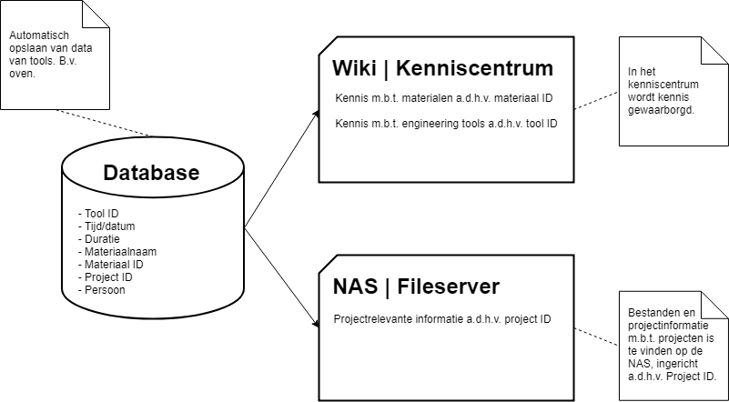

QConcepts bezit een NAS waarop alle bestanden in worden opgeslagen. De medewerkers kunnen op deze manier de bestanden delen, inzien en zonodig aanpassen. Echter is de NAS structuur erg onoverzichtelijk en kunnen medewerkers niet gemakkelijk bestanden terugvinden waardoor er veel kostbare tijd verloren gaat. Daarnaast wil QConcepts straks de bestanden indelen aan de hand van verschillende groepen gebruikers, namelijk; Studenten, IIME, QConcepts-Sales, QConcepts-Production en nog andere zusterbedrijven die in de toekomst erbij komen. Hierop moet natuurlijk een beveiliging en rechtensysteem komen. Ook is het belangrijk dat er een logische structuur en logisch zoeksysteem wordt aangehouden. In combinatie met een kenniscentrum en een database die QConcepts in haar toekomstbeeld heeft voor de verschillende engineering tools, kan er een nieuwe inrichting worden ontworpen voor de NAS. Het grote verschil tussen de NAS en het kenniscentrum is dat bij het kenniscentrum kennis waarborging centraal staat. Op de NAS bevinden zich belangrijke bestanden en informatie van klanten, echter in het kenniscentrum kan men dingen plaatsen die hij/zij heeft ontdekt of geleerd en dit delen met de rest binnen de organisatie.
Ons advies
Wij hebben voor QConcepts een logisch zoeksysteem bedacht waarbij de bestanden op de NAS gelinkt worden naar de data in de database en in het kenniscentrum. De structuur van deze drie systemen ziet er als volgt uit:

Ons advies is om bij de implementatie van de database een vooraf vastgesteld structuur voor ID’s te gebruiken. Zo heeft elke tool, materiaal en project een uniek ID wat gebruikt kan worden om snel en gemakkelijk te kunnen zien of het om een tool, materiaal of project gaat en om informatie erover gemakkelijk terug te vinden op de NAS en in het kenniscentrum. In dit project hebben wij een wiki (MediaWiki) voorgesteld als kenniscentrum (klik hier om meer te lezen over de wiki). Op de wiki kan een rechtensysteem geplaatst worden, waarmee bijvoorbeeld ingesteld kan worden dat studenten bepaalde wikipagina’s alleen kunnen inzien en niet bewerken. Om de wiki te beveiligen, maar ook gebruiksvriendelijk te houden, kunnen de inloggevens voor de NAS ook worden gebruikt om op de wiki in te loggen. Dit kan geïmplementeerd worden aan de hand van LDAP op de NAS wanneer de wiki is geïnstalleerd. Op het internet is veel documentatie aanwezig van MediaWiki over het inrichten van de wikipagina’s, echter komt hier enige beheer bij kijken. Daarom raden wij aan om bij implementatie van het kenniscentrum één persoon aan te wijzen als beheerder van de wiki.